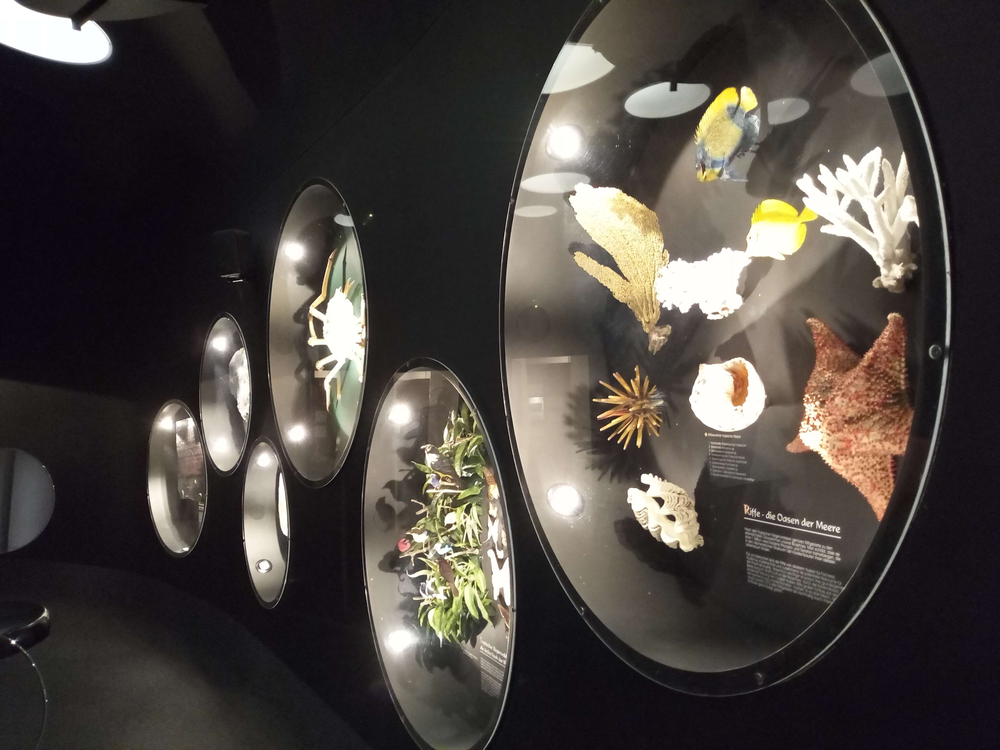

Bamberg Natural History Museum
Bamberg, Germany · Bavaria
The Natural History Museum in Bamberg offers visitors an opportunity to explore the natural world through its collections and exhibitions. Located in a historic setting, the museum brings together natural history, science, and local heritage, providing an interesting glimpse into the diversity of nature and the history of scientific discovery.
My Photo Gallery
Explore my personal photographs from the Natural History Museum in Bamberg.
View Photo Gallery